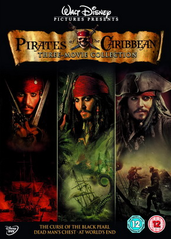

Piratas do Caribe
 Saiba mais sobre esta saga.Planeta dos Macacos
Saiba mais sobre esta saga.Transformers
Saiba mais sobre esta saga.Jurassic Park/World
 Saiba mais sobre esta saga.
Saiba mais sobre esta saga.
Saiba mais sobre esta saga.
Saiba mais sobre esta saga.